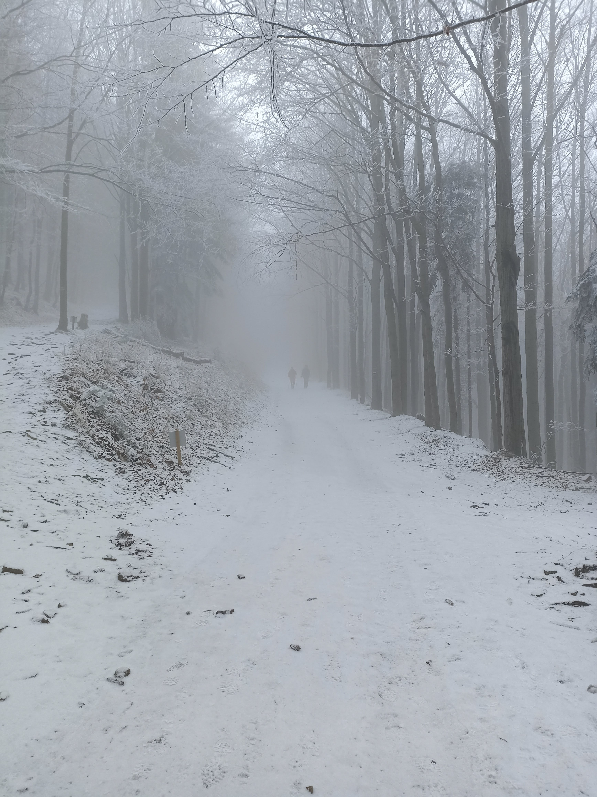
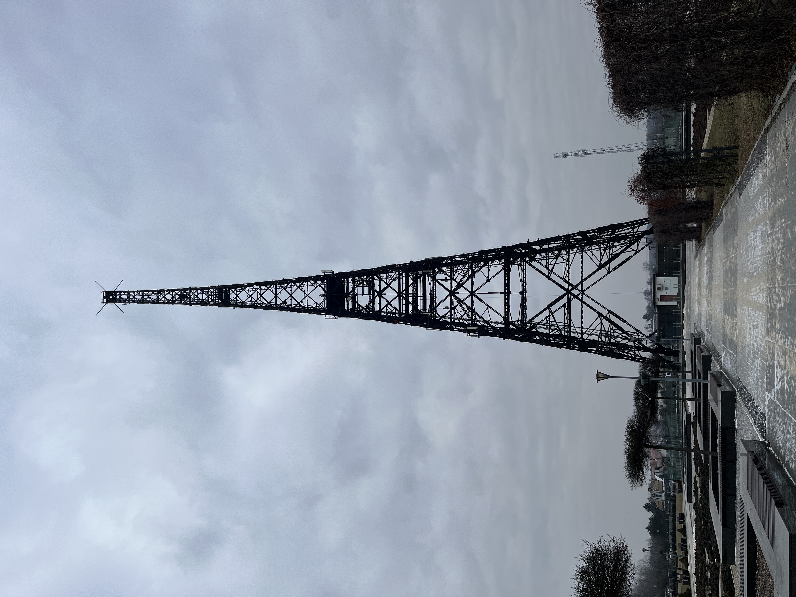

Moje zimowe podróże

Szczyt ponad chmurami
Piękna sceneria na szczycie Szyndzielni
Średniowieczny zamek
I jego historia w Nowym Wiśniczu
Spokojna zima
Spokojne przetarcie na szczyt
Chwila szczęścia
Podczas wycieczki przez lasy
Drewniana historia
Wycieczka do wieży przez którą Hitler